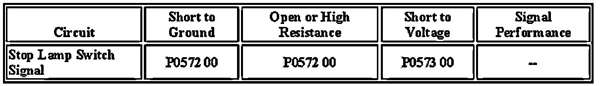

P0573
DTC P0573
Diagnostic Instructions
- Perform the Diagnostic System Check - Vehicle prior to using this diagnostic procedure.
- Review Strategy Based Diagnosis for an overview of the diagnostic approach.
- Diagnostic Procedure Instructions provides an overview of each diagnostic category.
DTC Descriptor
DTC P0573 00 : Brake Switch Circuit 1 High Voltage
Diagnostic Fault Information

Circuit/System Description
The torque converter clutch (TCC) signal circuit is a high voltage input to the body control module (BCM), engine control module (ECM) and transmission control module (TCM). The ECM monitors the stop lamp switch circuit to detect when the brake pedal has been applied. The BCM monitors the stop lamp switch to determine when the brake pedal is applied. When the brake pedal is applied, the BCM sends a GMLAN serial data message to the ECM indicating that the brake pedal has been applied. The ECM senses a high voltage signal on the TCC signal circuit when the brake pedal has been applied.
Conditions for Running the DTC
- The ignition is ON.
- The engine is running.
- Battery voltage is greater than 11.5 volts.
Conditions for Setting the DTC
The ECM detects a high voltage on the TCC brake signal circuit when the serial data message from the BCM indicates the brakes are not applied.
Action Taken When the DTC Sets
- The cruise control system becomes inoperative.
- The ECM stores the DTC to memory.
- The ECM will record the operating conditions at the time the diagnostic failed. The ECM stores this information in Failure Records.
Conditions for Clearing the DTC
- The condition responsible for setting the DTC no longer exists.
- A history DTC will clear once 40 malfunction-free ignition cycles have occurred.
Circuit/System Testing
1. Ignition OFF, disconnect the harness connector of the brake switch.
2. Ignition ON, verify that a test lamp does not illuminate between the stop lamp switch TCC brake signal circuit terminal A and ground.
- If the test lamp illuminates, test the TCC brake signal circuit for a short to voltage.
3. If all circuits test normal, replace the stop lamp switch.
Repair Instructions
Perform the Diagnostic Repair Verification after completing the diagnostic procedure.
Stop Lamp Switch Replacement